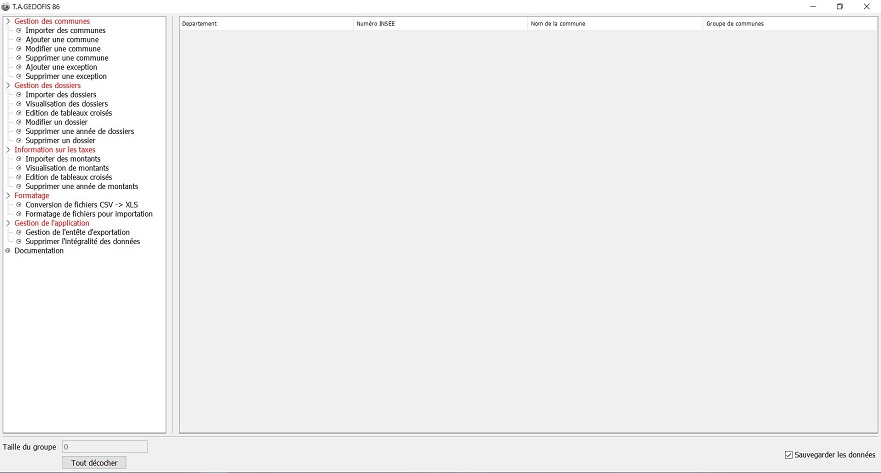

T.A.GEDOFIS

Fonctionnalités
- Lecture de dossiers contenant des fichiers CSV
- Recherche de dossiers manquants (taxes d'aménagement)
-
Consultation et exportation de tableaux croisés en CSV et Excel
- Consultation et exportation de statistiques en CSV et Excel
-
Filtrage des recherches et consultations par année ou groupe d'années, commune, type de taxe
Contexte
- Direction Départementale des Territoires
- Développement Java et Swing pour l'UI
-
Août 2018
-
Direction Départementale des Territoires